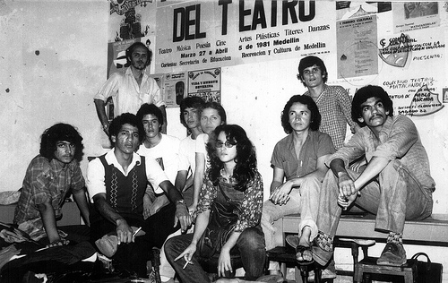
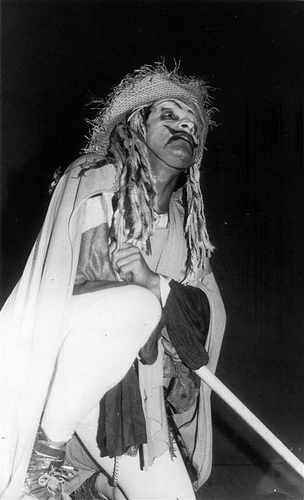
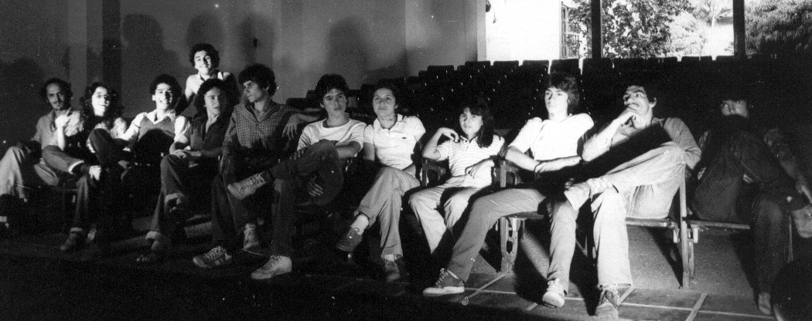
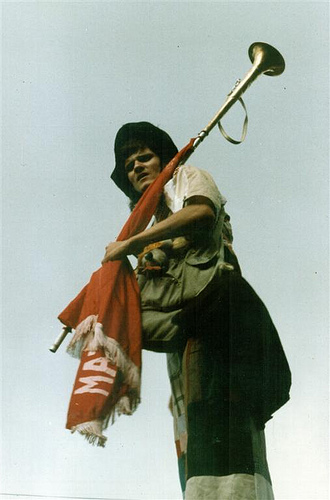
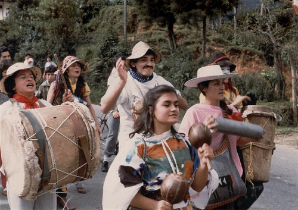
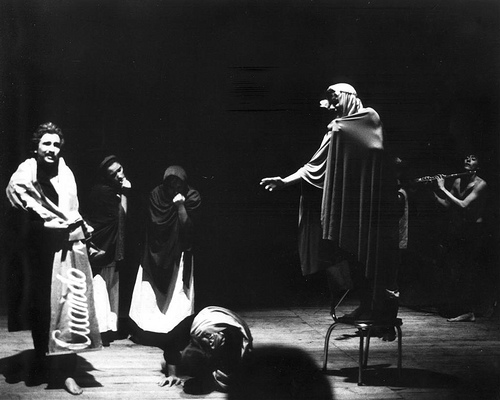

TEATRO MATACANDELAS 30 AÑOS.
CRÓNICA DE UN NACIMIENTO
"Publicado en la revista Conjunto No. 150 enero - marzo 2009
Revista de teatro latinoamericano Casa de las Américas, La Habana, Cuba"
"Matacandelas. Instrumento que, fijo al extremo de una caña, sirve para apagar las velas o cirios colocados en lo alto".
Sinónimos: (apagador, apagavelas).
Enciclopedia Larousse
"A matacandelas. Misteriosamente y con secreto".
Enciclopedia Espasa - Calpe.
"Excomunión a matacandelas. La que se publica en la iglesia con varias solemnidades y entre ellas la de apagar candelas, metiéndolas en agua".
Enciclopedia Espasa - Calpe.
"Pl. Matacandelas - Micol. Seta con el sombrerillo globoso, luego oval, acampanado y convexo plano, mamelonado, con la cutícula gruesa, desgarrada en escamas, y las laminillas libres blancas, muy apretadas".
(Es comestible y tiene olor y sabor agradables).
Enciclopedia Universal Ilustrada.
Nacimos y nos fuimos enviciando al teatro en una inmensa mansión, la Casa de la Cultura de Envigado, otrora hacienda Andalucía, construida en el siglo XVIII, cuna de Miguel Uribe Restrepo, filósofo y matemático insurrecto contra Simón Bolívar, a quien acusaba de monárquico. Éramos entonces nueve muchachos aficionados un 9 de enero de 1979, que de pronto creíamos que el teatro podría ser un espacio para no caernos de la infancia y, quizás, una pequeña herramienta que avalaría nuestro ideal de un mundo distinto. Recibíamos con alborozo los perfumes que aún giraban en el aire con la explosión del movimiento nadaísta, las baladas adolescentes, las formas innovadoras de la literatura y un teatro que se consolidaba con un cardumen de rebeldes entre los que, por supuesto, tomaban la delantera Santiago García y Enrique Buenaventura. Supimos de una posibilidad para hacer teatro cuya fórmula salvadora era en “grupo”, y que a falta de una sólida tradición podríamos crear en “colectivo”, algo que sintonizaba muy bien con la precariedad y nuestra ingenua noción del comunismo. Allí donde surgía una idea contestataria, nuestra presencia estaba garantizada por el sólo hecho de ser el opuesto a la forma en que habíamos sido “educados”. Intuíamos que, fuera de estas toldas de comerciantes y acaparadores con su música de nostalgia evocadora y su literatura de frailes y pueblo alelado, existía un campo abierto donde la fraternidad, la fiesta y la existencia eran posibles. Buscábamos la línea de equilibrio entre Marx y Rimbaud, creyendo que debíamos unirnos a la gran marcha de transformar el mundo como primera etapa para cambiar la vida.
Qué nombre le pondremos. Ojos tapados y donde caiga el índice en el diccionario de sinónimos y antónimos: Matacandelas.
Envigado era entonces la ciudad “señorial”, proclamado municipio eficiente y rico, con muy bajo índice de desempleo y un orgulloso grado cero de analfabetismo, con una mayoría blanca y culta de ancestro español, solamente oscurecido por el lunar del barrio Palenque, antiquísimo reducto de esclavos. La vida cultural giraba en torno a ir a misa y ocupar un asiento en alguna fuente de soda para oír en el traganíquel las baladas de Sandro y Palito Ortega. El pueblito parecía atollado en el siglo XIX. El filósofo Fernando González Ochoa, había muerto en 1964 y sus libros, estigmatizados como literatura del mal, circulaban en ediciones baratas provocando el fervor de los mechudos. Como su nombre ya empezaba a causar admiración en todo el país y muchos sitios de la América Latina, el oficialismo con una mueca de desagrado fingió que le era indiferente. En la carretera de entrada al terruño el nombre de su casa campestre era simbólico Otraparte, la reja de acceso ostentaba (y sigue ostentando) una leyenda forjada en hierro: “CAVE CANEM SEU DOMUS DOMINUM” (Cuidado con el perro o sea el dueño de la casa), pues ya lo había tatuado en sus escritos “tengo que mantener vigilado al perro que yo soy”. Llegó a describir a Envigado como un pueblo bobo, sin problemas, ahíto de cesantías, pero de todos modos un paraíso donde él, de profesión abogado, podía ejercer mejor que en cualquier otro lugar del mundo su verdadera vocación, atisbar entierros, agonías y mujeres. La pintora Débora Arango, hoy reconocida y aclamada, vivía inexistente en su casona monasterio. Muy pocos lo sabían. Se rumoraba con escándalo que había recibido el espaldarazo del líder Jorge Eliécer Gaitán cuando sus óleos eran excluidos de las exposiciones capitalinas. Se le aplicó el castigo de muerta en vida por cometer tres crímenes: Pintar desnudos, pintar el cuadro de la salida del país del depuesto presidente Laureano Gómez, ese cavernario, y el crimen de ser mujer.
Aún para aquel año 1979, entre la gran reverberación política, todavía primaba el esquema pueblerino, todo muchacho debía aspirar a médico, abogado o cura, si quedaba a mitad de camino podía llegar a boticario, y si era un fracasado sobrellevar entonces una vida resignada y productiva como obrero de la próspera fábrica Coltejer, primer nombre en textiles. Si por desventura era mujer, debía ser graduada en el colegio de las monjas de La Presentación, porque de los otros colegios no salen sino “feas o putas”, y prepararse para engendrar muchos hijos, pues Envigado aparte de ser la Ciudad Señorial, y la Sucursal del Cielo ostentaba también orgullosamente el título de municipio fértil, eran las familias de entre ocho y diez hijos (su fundador Lucas de Ochoa fue un brioso semental de veintidós vástagos) gracias a la milagrosa corriente cristalina de la quebrada La Ayurá, en cuyas aguas, se decía, mujer que se bañaba podía gozar de una múltiple descendencia, podía –se exageraba– quedar embarazada con solo mirar un hombre en calzoncillos. Aún hoy el visitante puede ver el Monumento a la Fertilidad, estatua de una mujer en embarazo, “con las piernas abiertas y en actitud pensativa”.

La bella y desolada mansión destinada como Casa de la Cultura era subutilizada por un silencioso club de ajedrez que de tarde en tarde se reunía a un jaque. El director Vedher Sánchez, fue nombrado no para impulsar algún desarrollo cultural sino para impedirlo, sin personal auxiliar, sin presupuesto, sin teléfono, sin máquina de escribir, tenía las virtudes de la inquietud intelectual y el librepensamiento. Nos acogió con entusiasmo y nos puso a disposición cuanto le fue posible, lo más urgente entonces, un pequeño auditorio con un escenario donde no cabían al mismo tiempo diez personas. Se corría el rumor de ser aquella una casa donde deambulaban los fantasmas, excepto los ajedrecistas nunca vi uno. Había entre días un jardinero taciturno. La única vez que nos habló fue para contarnos que había renunciado a su condición de policía al sospechar que le alteraban químicamente los alimentos para convertirlo en un energúmeno a la hora de ir a “golpear pobres”. Habitaba también un celador que se debatía entre humano y rottweiler, a mí siempre me pareció más cercano a la segunda opción. Desde las rejas una multitud de niños curiosos contemplaba nuestras sesiones corporales al aire libre, cuando tratábamos de acercarnos huían con gritos de “maricas” “putas” “degenerados” “marihuaneros”. Encerrados en el auditorio ensayábamos entre una lluvia de piedras y gritos que golpeaban en las ventanas. Los actores al cabo de los días saturados de impaciencia hablaban de emprenderla contra la gavilla, yo los instaba a esperar porque intuía que con el tiempo esos mismos muchachitos iban a ser nuestros más cercanos espectadores. Tal cosa sucedió.
Dije actores. No lo eran. Carecíamos en toda la provincia de una escuela formativa, la mitad de nuestra anémica herencia teatral provenía de los esporádicos chapuceos colegiales con sainetes, juguetes cómicos y recitaciones de la Galería Dramática Salesiana, un teatro infantil y juvenil para actos patrios, ofrendas religiosas y días del idioma. Un vasto plan catequístico originado en Italia con Don Bosco y extendido por la catoliquería española del franquismo para evangelizar por medio del juego teatral a los chicos de las escuelas, una modalidad de terapia, a fin de mantener ocupado el pensamiento, fieles a la consigna de que “el ocio produce malos pensamientos”. La otra mitad provenía de los seriados radiales donde –ahora reconocemos esa bondad– las voces de los radioactores forzaban nuestra imaginación a realizar las puestas en escena. Los ocho aficionados a actores promediaban los veinte años de edad. Algunos se habían acercado al teatro empujados por el entusiasmo de una posibilidad transformadora de lo social desde el escenario, otros porque no habían accedido a la universidad, y un resto tratando de ganar un poco de vagabundeo en su existencia. Era lícito y honesto. De hecho nuestra naciente dramaturgia e impetuoso teatro, autodenominado “Nuevo teatro”, fue una propuesta de la izquierda revolucionaria desesperada por el autismo cultural de la burguesía colombiana. Calígula nombró cónsul a su caballo, un presidente colombiano nombró al campeón de ciclismo Cochise Rodríguez, un chambón carismático, como agregado cultural de la embajada en Italia, a lo cual horrorizado el periodista crítico Alberto Aguirre inquiría por la respuesta del deportista cuando le preguntaran los europeos si en Colombia se leía la poesía de Francesco Petrarca. La inteligencia de nuestro país estaba en los pedales.
Los ricos “cultos” compraban acuarelas de vacas pastando y mujeres semidesnudas alcanzando el cosmos, mientras la plebe se esparcía los domingos viendo decolar aviones en el aeropuertico Olaya Herrera y a veces entre semana, agolpando los teatros donde se grababan con risas en vivo los programas radiales del cómico Montecristo, un verdadero histrión malogrado en la espesura de los libretos atarbanescos de chistecitos sobre picardía sexual. En la clase media y en cierto sector proletario avanzado, se gestaba otro país que emergía de las grietas provocadas por algunos acontecimientos mundiales como la Revolución cubana, mayo del 68 y el grito airado de los nadaístas contra la oligarquía terrateniente: “La sociedad somos nosotros, los rebeldes son ustedes”.
Todo esto tiene la apariencia de un cuento bucólico. Hacia adentro los acontecimientos eran vertiginosos. Hablábamos del pequeño hilo de agua llamado La Ayurá que en voz indígena significa perico ligero, referido al simpático lorito azul y verde. Pero otro tipo de perico sin plumajes se estaba empollando. Después de la bonanza marimbera con su producto estrella, la Santa Marta Golden, que convirtió a Colombia en un gran consumidor y exportador, vino la era arrasadora del “perico” (cocaína) pues un kilo se vendía en los Estados Unidos y Europa al mismo precio que un buque cargado de marihuana.
Fue entonces cuando el legendario Pablo Escobar emergió faraón de una casta de otrora contrabandistas de chécheres, que ahora con su economía caliente pondría a trastabillar al aparato gubernamental y al mismo fisco del imperio. Se paseaba impoluto dueño de hombres, edificios y gallinas. Una rara inteligencia política y militar sustentada en su poderío monetario. Los héroes en Colombia sí existen, los ha procreado siempre el delito.
La cocaína no sólo estaba convirtiendo a Envigado en capital del mundo y a Pablo Escobar en monarca, también arrastraba una multitud de jóvenes a los paraísos artificiales. Desesperados en su nirvana los muchachos saqueaban de sus casas todo aquello que fuera intercambiable, creando a su paso un gran mercado de segundas manos donde abundaban antigüedades, alhajas, electrodomésticos y libros. De esa manera terminábamos en los puestos de cachivaches haciéndonos a bajo precio de las grandes joyas de la literatura universal. Los aldeanos patricios contemplaban cómo se tambalean las “sólidas” estructuras morales y religiosas de sus familias. Muchos prohombres vieron a sus hijos convertidos en soldados del nuevo oficio. La fiebre del dólar sacudió al villorrio. De apacible se convirtió en una nueva Mahagonny donde fueron comunes los tiroteos y los muertos en medio de un carnaval de bataclanas al más claro estilo kitsch. Cambió la arquitectura, cambió la música, la manera de vestir, los automóviles, las miradas, las maneras de contemplar el cielo. Aquellas verdes montañas que Fernando González Ochoa cantara asegurando que eran el paraíso donde Jehová había creado a Eva de catorce años y medio, giraron a un blanco mediterráneo de edificios y antenas parabólicas. El Mónaco colombiano. Se instauró el DOC (Departamento de Orden Ciudadano), una temible tropa oficial noctívaga que todos los amaneceres ofrendaba al pueblo un paquete de cadáveres.
Simultánea a esta mutación de tierra de contrabandistas ilustres a narcotraficantes poderosos, el entonces excelentísimo presidente de la república Julio César Turbay Ayala, un fufurufu de voz gangosa, metepatas y ordinario, que siempre remitió al Padre Ubú, y a quien el rumor popular, refiriéndose a su ignorancia, le fusilaba con el chiste de un supuesto atentado al haberle sido arrojada una enciclopedia por debajo de su puerta, nunca vio en el narcotráfico un fenómeno nuevo para contener y legislar, por el contrario, su sicopatía se exclusivizaba en reprimir el descontento de la población elaborando un temible Estatuto de Seguridad, que borraba de tajo cualquier derecho constitucional criminalizando el descontento social. Por las caballerizas de Usaquén centenares de líderes, intelectuales y artistas fueron sometidos a tormento. Un caso extremo lo constituyó el vejamen al poeta Luis Vidales, torturado a sus ochenta años de edad. El Nobel García Márquez que figuraba en una lista negra, es avisado a tiempo y logra con premura asilarse en México (hoy al anciano escritor le fascinan los abrazos y las fiestas con sus torturadores. Y con los gringos. Síndrome de Estocolmo quizá). Años después El Excelentísimo soltaba a la prensa internacional un par de perlas que harían enrojecer de envidia a Alfred Jarry: “El único preso político en Colombia soy yo” y “En Colombia los presos se autotorturan para desprestigiar al gobierno”.
Por aquellos días, y respondiendo acertadamente al acelerado avance del teatro en Colombia, un informe de inteligencia militar –perdón por el oxímoron– presentado por mi General Landazábal Reyes recomendaba al alto gobierno –otro oxímoron– que el teatro debía ser sofocado porque era una práctica popular realizada por cualquiera con medios muy económicos, ejerciendo –palabras más palabras menos– una gran influencia sobre el auditorio, puesto que allí en el escenario estaba el hombre real, no una representación de él. Ahora sería Bertolt Brecht quien debería ponerse rojo de la envidia. Un tsunami represivo de corte medieval se desató sobre actores y grupos de teatro quienes se atrincheraron creando la Corporación Colombiana de Teatro. En un momento en que había más partidos políticos de izquierda que militantes, la persecución produjo resultados contrarios y una epidemia de teatro panfletario se extendió por todo el territorio. Se borró la línea imaginaria entre ficción y realidad, de suerte que a muchos nos tocó ver verdaderas tomas del poder político en los escenarios. Tiempos maravillosos.
Protegido por su insignificancia, el Teatro Matacandelas continuaba al interior su camino formativo. Nos tocaba ser grupo y escuela en simultáneo. Stanislavski, Brecht, Grotowsky, Artaud, y la profusión de materiales reflexivos del nuevo movimiento de teatro colombiano eran objeto de cuidadoso estudio. Nos formulábamos proyectos de lecturas investigativas sobre toda suerte de ismos y tendencias que no marginaban ninguna expresión estética, sin perder nunca la perspectiva de ser un humilde colectivo en proceso de construcción. Las bases debían ser sólidas. Recuerdo cómo nos entusiasmaba ese sociológico Boal afirmando que “el teatro puede ser hecho por cualquiera incluso hasta por actores, el teatro puede ser realizado en cualquier parte incluso hasta en escenarios”.
El único en el conjunto con alguna trayectoria era quien esto escribe. Había practicado teatro con un fervor tal en la época colegial, que en un punto cualquiera sin terminar bachillerato estaba ya totalmente absorbido por tres grupos de aficionados donde las comedias nos divertían y permitían, más allá de la vida escolar, tener un espacio de preguntas. El juego del teatro era básicamente una postura de libertad que respondía a un contexto de seriedad y de practicismo. Y por contera –qué vergüenza decirlo– nos hacía muy interesantes con las muchachitas, a la par de brindarnos algunas buenas amistades. Cuatro años atrás del nacimiento de Matacandelas, huyendo de circunstancias personales y familiares y sobre todo de un medio que imponía dedicación a lo útil, me fui a España como quien llega a ninguna parte. Cara y cruz, con cara me quedo, con cruz me marcho.
El trasatlántico italiano Rossini me descargó una mañana en Barcelona después de quince días de navegación con un Caribe multicolor y un Mediterráneo sereno. En Madrid llevé una errancia de cuatro años, vida de vagabundeo y aprendizaje. Participé con los grupos de acción cultural, fundé el colectivo La Escalera, y merodeé alrededor de esa gran eclosión que fue el teatro independiente, con un fervoroso despertar inscrito en esa volcánica agitación que significó la muerte del difunto, es decir Francisco Franco. Madrid enfiestada se tiró a la calle para despertar de una pesadilla de cuarenta años. La sala Reina Victoria se agotaba con la temporada de Equus, de Peter Shaffer por el hecho de que la censura boca abajo había permitido, por fin, un desnudo en escena. El dramaturgo Fermín Cabal reprocharía con humor, cómo tristemente el primer logro revolucionario de un español en cuarenta años había sido ver una teta.
El azar me acercó un día a José Salas, escenógrafo del grupo Rajatabla de Venezuela y que entonces incursionaba, a petición de los programas de intercambio cultural de la embajada de su país, como director de escena. Su rigurosa dirección actoral, su sentido del ritmo escénico, así como su disposición a lo irregular significaron para mí una gran revelación teatral. Hasta entonces fue lo más sólido que encontré en mi camino y creo que nunca he abandonado su influencia salvaje. Pequeño, macizo, femenino, era un director sin técnica que acostumbraba trepar a escena a fustigar a los actores, nos retaba, nos insultaba, nos trataba de transmitir la fuerza y la emoción que él creía lo rebasaban y a nosotros nos faltaba, llegó a estar al borde de la epilepsia. Siempre lo contemplé con un gran regusto pensando que todas esas piruetas eran muy divertidas, pero superables con el estudio y la técnica. Entonces creí y sigo creyendo que actores hay de sobra, directores muy pocos. Esto es peligrosamente axiomático.
Con Salas y otros, incursioné en happenings, performances, teatro de agitación política. Me enamoré de Federico García Lorca y Antonio Machado, y cuando sentí que ya se me abrían las puertas para practicar un teatro serio, profesional, de repertorio, bien pago, me asustó el teatro como oficio, no como pasión y decidí regresar a Envigado donde sabía tendría que recomenzar. Mucho tiempo me demoré en saber a qué había ido a España. Después entendí que fui a resolver asuntos que se escapaban a mi comprensión juvenil: el valor del trabajo en equipo, la entelequia del dinero, y la diversidad del teatro. Nunca supe –ahora sí– que era un aprendizaje para darle estructura al Teatro Matacandelas, proyecto que se ha bebido la mitad de mi vida y mi salud, las dos terceras partes de mis afectos, gran porcentaje de mi sangre y de mis sueños.

Con la carta de presentación traída de España todos los muchachos me aceptaron. El único requisito que uno necesita para ser director es que encuentre algún pendejo que se lo crea. Yo encontré ocho.
¿Qué teatro hacer? ¿Cómo empezar? Huyendo de dogmatismos y del complejo intelectualista del vanguardismo, consideramos que lo mejor era ofrecernos un panorama amplio, ver mucho teatro, leer muchas dramaturgias, ampliar los referentes teatrales, artísticos y culturales, estar en una permanente actitud de atisbamiento. Nunca hemos sido, ni creído ser, experimentales. Lo que se conoce como tal no es punto de partida sino de llegada, se experimenta cuando hay fatiga de lo convencional, del gobierno del oficio, de no soportar la monotonía de lo que ya se sabe y se ha practicado en profundidad. Se confunde a menudo lo experimental con lo joven, con lo bisoño, con lo confuso. Se suele hablar de “riesgo”, como si se tratara de una cacería de leones o de participar en un bombardeo. Pamplinas. El teatro no es riesgo, es exploración.
Era un buen momento. El entorno teatral colombiano para comienzos de los años 80 crepitaba: el Teatro La Candelaria se paseaba aclamado con su Guadalupe años sin cuenta y la ambiciosa puesta en escena a partir del libro de John Reed, Diez días que estremecieron el mundo. El Teatro Experimental de Cali recibía aplausos a nivel internacional y en muchos lugares se estudiaban sus investigaciones sobre la creación colectiva. El Teatro Libre de Bogotá desbordaba todas las noches su sala con La agonía del difunto. El Teatro Popular de Bogotá había alcanzado su punto máximo con I took Panamá y a Medellín por aquellos días se le paralizó su corazón de asfalto, la avenida Oriental, con la inolvidable presentación de La cabeza de Gukup, del Teatro Taller de Colombia, que desencadenaría toda la corriente de teatro en la calle que pervive hasta hoy.
En Medellín –Envigado está a tres zancadas– Juan Guillermo Rúa se destacaba con su Moneda del centavo y medio, un monólogo que solía presentar insaciablemente hasta debajo de las piedras. Gilberto Martínez estrenaba polémicos montajes al tiempo que sostenía una intensa actividad pedagógica. El Taller de Artes, con su amalgama de artes plásticas, escena y música, alcanzaría obras como Técnica mixta y El arquitecto y el emperador de Asiria, de Arrabal, que se escapaban del conjunto socializante del realismo y la creación colectiva. En simultánea Mario Yepes colocaba los fundamentos de la Escuela de Teatro de la Universidad de Antioquia para convertir la formación teatral en una licenciatura. El Pequeño Teatro, La Fanfarria, El Taller, asfixiados por no poder recalar en los grandes teatros de la ciudad –construidos para presentar a Paloma San Basilio y a Joan Manuel Serrat y hoy allanados por iglesias cristianas y estafadores de cursos de superación personal– buscaron ruinosas viviendas que reacomodaron en modestos teatros de bolsillo, dando inicio desde lo underground a la formación de nuevos públicos. Esa pauta generó la profusión de salas grupales que predominan en la actualidad.
En un espectro más amplio Medellín, abigarrada y caótica, diseñada para comprar y vender, nunca para vivir, trataba, con pequeños sectores progresistas, de empujarnos al siglo XX. Renovadoras fueron las exposiciones del recién creado Museo de Arte Moderno, se abrió la Cinemateca Subterráneo, con un cine clásico y actualizado y la Cámara de Comercio de Medellín se convirtió en pionera de una intensa proyección cultural donde pudimos acceder a lo más avanzado a nivel nacional en cine, teatro, pintura y música. Nos estábamos enganchando al carruaje del país.
Ya sabemos que el legendario espíritu paisa es cerril a la abstracción y al arte y sólo proclive a lo inmediato y monetario. Había dicho el filósofo de Otraparte: no es que los antioqueños sean muy judíos, sino que los judíos son muy antioqueños. La publicitada chispa paisa como recursiva, de “raza” superior, había sido golpeada por las palabras mordaces de Alberto Aguirre, tildado de Capitán Veneno: “Ojalá algún día toda esta inteligencia para conseguir plata se convierta en una inteligencia para la vida”.
Fustigados por la premisa brechtiana que sitúa a los prácticos que nunca dudan frente a los reflexivos que nunca actúan, decidimos salir a la luz pública el 28 de agosto de 1979 frente a un auditorio de ciento cincuenta personas atiborrado de niños, estudiantes, intelectuales y curiosos que venían a pasarnos examen. ¿Qué cuento es vuestro cuento? era una pieza collage a partir de un esquema del poeta español León Felipe donde un juglar itinerante ofrece a la concurrencia un zurrón lleno de historias que pueden ser sacadas al azar. Esta colcha de retazos delataba un inicio lleno de preguntas y saludables confusiones. Había prosas, diálogos y poemas del propio León Felipe, Augusto Boal, Mario Benedetti, Shakespeare, Pablo Neruda, Jacques Prevert, Quevedo, del salvadoreño Miguel Ángel Azucena, de los colombianos León de Greiff, Gabriel García Márquez, del novísimo Esteban Carlos Mejía, Gustavo Tatis Guerra, Jorge Zalamea Borda y textos propios. El compendio resultaba ser el digno testimonio de todo un periodo de lecturas, conversaciones y teatro referenciado, una suerte de programa de trabajo para los siguientes treinta años. La boca seca, las piernas temblonas, cuchilladas en el estómago, y ojos de bobo suelen constituir la sintomatología que presentan actores y actrices en una noche de estreno. El conversatorio final con los asistentes aquilató un poco la exaltación pues se obtuvieron conceptos benévolos y palabras altamente elogiosas. No obstante, dice Jarry: “Para el artista el ojo que lo admira no es nunca lo suficientemente grande”.

¿Qué cuento es vuestro cuento? logró una aceptación popular tan enorme que se convirtió en un fracaso que por poco nos aplasta, pues con el tiempo y nuevos montajes el público y las instituciones de programación sólo querían tal obra. En algunos reductos se mofaban de nosotros llamándonos no Matacandelas sino el Grupo Quecuentoesvuestrocuento. La obra se representó incluso en escenarios. Por todo atrezzo una simple silla servía para que ocho actores durante noventa minutos iniciaran un recorrido literario que mantenía, con un ritmo endemoniado, a una audiencia a menudo compuesta por niños, jóvenes y ancianos con la boca abierta. Años después, mucho más sólida, desencadenó una explosión de gritos y aplausos en la Universidad del Valle con estudiantes que nos obligaron a un bis, cosa tan insólita en una representación. Primera y única vez que lo he disfrutado. Una reseña de aquel año escrita por el periodista Óscar Hernández decía que por la ciudad circulaba una bomba llamada Matacandelas capaz de representar teatro en un ladrillo. En una ciudad carente de teatros lo mejor era convertir a la ciudad en un teatro. La obra poseía además una doble virtud, podía, según público, según lugar, según tiempo, encogerse y estirarse. Y de este modo se llegaron a hacer anecdóticas representaciones de fragmentos en viviendas particulares, cafeterías, aulas escolares, canchas de baloncesto, tugurios, carpas de huelga. Uno de sus sketchs, concretamente El Ángel de la Guarda, del brasileño Augusto Boal, obtuvo el premio Congo de Oro en comedia en el Carnaval de Barranquilla. Esa pieza de quince minutos adaptada a la calle y a punta de sombrerazo, financió la permanencia del grupo durante dos meses en la ciudad de Barranquilla, en una temporada de investigación sobre danza y ritmo.

Cuando a veces a boca de jarro me fusilan con la pregunta qué es Matacandelas, la respuesta menos inexacta que encuentro es: un colectivo apasionado y riguroso, una mixtura compuesta de tres temperaturas, litoral atlántico, disciplina bolchevique y aliento español (el de la otra España, la de Machado, la del Españolito que vienes al mundo te guarde Dios porque una de las dos Españas ha de helarte el corazón).
Y si no sobra, agrego que muy por fuera del Matacandelas está el complejo cultural vanguardista, la vanidad de la importancia y el anhelo imbécil de pertenecer a la historia del teatro. Estamos muy cerca de creer con Flaubert que este es un planeta de segunda categoría habitado (y dominado) por una especie animal de tercera. Pido disculpas por traer a colación el pesimista agravio.
Varios presupuestos teóricos y prácticos se movían al interior de lo que hoy es fundamento de nuestro colectivo. Por una parte, el joven fundador y compañero de pubertad, John Eduardo Murillo, más que actor, un hálito literario que escribía desde los doce años prodigiosas cabriolas poéticas que nos alborozaban de entusiasmo, estaba allí asegurando que el teatro debería ser un pretexto para arrojar literatura, esta boutade que niega la esencia misma de la teatralidad me sigue pareciendo un maravilloso error que quiero seguir practicando con cinismo. De otra parte, también rezago de aquellas épocas, me había rencontrado con Héctor Javier Arias quien quería practicar la música como mística, al decir de Nabokov, para “llenar las cámaras vacías de una fe”. En el punto de partida de nuestro teatro fue él quien puso las condiciones: “un actor un músico”, que hasta hoy atraviesa nuestra trayectoria. Y, finalmente, John Jairo Pineda quien desde su llegada no se fatigaba de insistir en que un teatro que no tuviera en cuenta el público infantil era un teatro mutilado, y sobre todo en un país donde los niños son inevitables ante el acontecimiento teatral. En Europa los niños nacen en hospitales, en la América Latina en plazas.
Fue así como él mismo implementó y dirigió teatro infantil a partir de los títeres. La primera obra La comedia de Facundina, híbrido incipiente resultado de un taller intensivo impartido por el legendario titiritero “Tío Conejo”, y la posterior influencia de lo que habíamos visto de La Libélula Dorada con su sorprendente Isla Acracia. La humilde obrita se alcanzó a estrenar meses después con un extenso periplo por escuelitas y barrios. Nuestra fertilidad envigadeña (también nos bañamos en La Ayurá) arrojó a continuación un sainete de la Galería dramática salesiana: La estatua de Pablo Anchoa, contundente juego de entradas y salidas con el característico sartal de disparates y enredos. Cómo nos divertíamos.

Con estos tres montajes el Teatro Matacandelas había sentado las bases de un teatro abierto, popular, de gran versatilidad, que cumpliera la premisa de ofrecer a una parte de la población su primer encuentro grato con el teatro. De paso le estaba ofreciendo al actor en formación un kilometraje bastante apreciable. Creo que de esas tres obras se hicieron en el transcurso de pocos años alrededor de quinientas representaciones, algo significativo para un grupo juvenil vocacional.
Aislado, descontextualizado, el Teatro Matacandelas no era un colectivo surgido como expresión de un movimiento teatral, era más bien una especie de profundización de la aventura colegial.
Catorce obras y siete años de peregrinaje. Nos hartamos de tanta calle, tanto grito, tanta amígdala averiada. Decidimos iniciar una nueva etapa de laboratorio donde las pesquisas se orientaran hacia otras direcciones. Pero esa, querido Billy Wilder, es otra historia.
